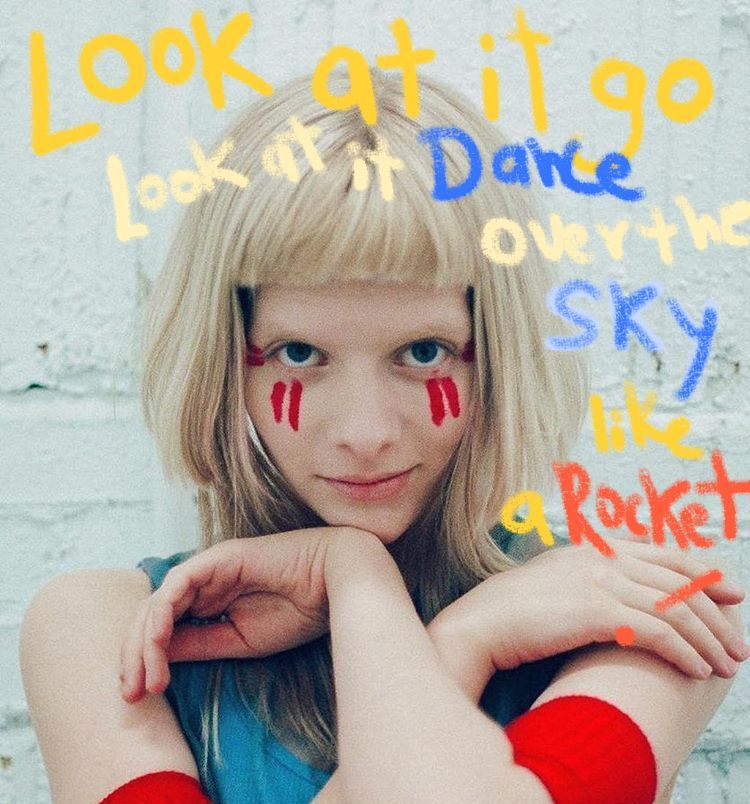

El alma de las canciones: Explorando el significado detrás de cada letra

Las letras de las canciones de Aurora son como poemas que cobran vida a través de su voz. Con una sensibilidad única, explora temas universales como el amor, la pérdida, la identidad y la conexión con la naturaleza, pero lo hace de una manera fresca y original. Sus palabras, a menudo cargadas de metáforas y simbolismo, invitan a una interpretación personal y profunda. Aurora tiene la habilidad de crear imágenes vívidas y evocadoras que transportan al oyente a mundos fantásticos y oníricos. Su poesía es a la vez delicada y poderosa, capaz de tocar las fibras más sensibles del alma y despertar emociones intensas.

Animal
Es una canción compleja y multifacética que invita a una reflexión profunda sobre la naturaleza humana. Aurora nos presenta una imagen cruda y honesta de nuestros deseos más primitivos, invitándonos a cuestionar nuestros propios comportamientos y a buscar un equilibrio entre nuestra parte racional y nuestra parte animal.
La canción también habla de la soledad y el aislamiento en la vida urbana, y cómo estos sentimientos pueden llevar a una persona a comportarse de manera más instintiva y menos civilizada.
Es una canción que nos hace sentir vivos y conectados con nuestras emociones más profundas.
Runaway
La búsqueda de un hogar interior "Runaway" de Aurora es una canción que evoca una profunda sensación de anhelo y desconexión. A través de imágenes oníricas y metafóricas, la artista noruega explora la búsqueda de un lugar donde sentirse verdaderamente a salvo y perteneciente.
En esencia, "Runaway" es una exploración de la condición humana. La canción habla sobre la búsqueda de un sentido de identidad, la lucha contra la soledad y el anhelo de un lugar donde sentirse verdaderamente a salvo. Es una reflexión sobre la fragilidad de la felicidad y la dificultad de encontrar un equilibrio emocional.
es una canción poderosa y conmovedora que nos conecta con nuestras propias experiencias de pérdida, anhelo y búsqueda. A través de su música y letras, Aurora nos invita a reflexionar sobre nuestra propia humanidad y a encontrar consuelo en la experiencia compartida.

Cure for me
Una canción poderosa y emotiva que aborda temas como la identidad y la lucha por los derechos LGBTQ+.
Un rechazo a la dependencia emocional. Es una poderosa declaración de independencia emocional. La canción profundiza en las dinámicas de una relación disfuncional y la negativa de la artista a conformarse a las expectativas de la pareja.Es un himno de empoderamiento que invita a cuestionar las dinámicas de nuestras relaciones y a priorizar nuestra propia salud emocional. Aurora nos inspira a ser fieles a nosotros mismos y a rechazar cualquier intento de cambiar nuestra esencia.

Everything Matters
Es una canción que invita a la reflexión profunda sobre la importancia de los detalles más insignificantes de la vida. Aurora, con su voz característicamente etérea, nos sumerge en un viaje sensorial donde cada elemento, por más pequeño que sea, cobra una relevancia innegable.
"Everything Matters" es una canción que invita a la introspección y a la conexión con nuestro entorno. Aurora, con su voz única y su sensibilidad poética, nos recuerda que la felicidad se encuentra en los pequeños detalles y que cada uno de nosotros tiene un papel importante en el universo.
en la cancion se teje una rica tapicería de simbolismos que invitan a una profunda reflexión. El cohete, que representa la velocidad y la aceleración de la vida moderna, contrasta con la invitación a la lentitud y la apreciación de los detalles. La naturaleza, omnipresente en la letra, simboliza la conexión profunda del ser humano con el universo y la importancia de vivir en armonía con ella.
Running with the Wolves
Es una invitación a reconectar con nuestra naturaleza más salvaje e instintiva. Aurora pinta una imagen vívida de una mujer libre, que se desprende de las limitaciones sociales y culturales para abrazar su propia fuerza interior.
Los lobos simbolizan la libertad, la intuición y la conexión con la naturaleza. Representan una parte salvaje y poderosa de la psique femenina que a menudo es reprimida.
Relación con "Mujeres que corren con los lobos" El título de la canción hace referencia directa al libro de Clarissa Pinkola Estés, "Mujeres que corren con los lobos". Este libro explora el arquetipo de la Mujer Salvaje, una fuerza poderosa y creativa que reside en cada mujer. Aurora, al utilizar esta imagen, se conecta con una rica tradición de mitología y simbolismo femenino.

The Seed
Aurora critica la codicia humana y la explotación sin control de los recursos naturales. La canción transmite un sentido de urgencia y desesperación por el daño irreversible que se está haciendo al planeta. Las imágenes evocadoras en la letra, como "When the last tree has fallen and the rivers are poisoned" (Cuando el último árbol haya caído y los ríos estén envenenados), pintan un cuadro sombrío del futuro si no se toman medidas inmediatas.
"The Seed" de Aurora es una canción que combina un mensaje urgente y crítico sobre la preservación del medio ambiente con una producción musical envolvente y una interpretación vocal apasionada. A través de su letra evocadora y su estilo único, Aurora logra transmitir un llamado a la acción y una reflexión profunda sobre la relación de la humanidad con la naturaleza. La canción no solo es un recordatorio de los peligros de la codicia y la destrucción ambiental, sino también una inspiración para buscar un cambio positivo y sostenible.

Estas son nuestras opciones, nada muy loco. ¿Cuales teorias ya habias escuchado? ¿cuales son nuevas para ti? ¿Cual es tu favorita? ¿Cual odias o te parece inviable? Ahora queremos que nos cuentes cuales son tus analisis de estas canciones! o de las que tengas muchas teorias! Compartelas por aqui abajo!